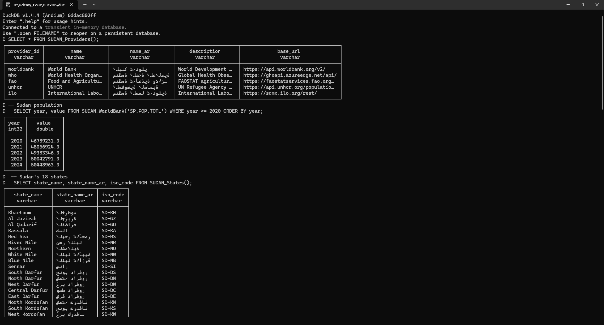

Sudan Extension v0.1.0
Unified SQL access to Sudan's humanitarian, development, and geospatial data from 5 international APIs.
Sudan is experiencing one of the world's largest humanitarian crises, yet its data is scattered across dozens of international APIs with incompatible formats. This extension brings all publicly available Sudan data into DuckDB — enabling analysts, researchers, and humanitarian workers to query demographics, economics, health, agriculture, displacement, and geospatial boundaries using standard SQL.
Installing and Loading
To install and load the sudan extension, run:
INSTALL sudan FROM community;
LOAD sudan;
The sudan extension is now loaded and ready to use.
Quick Example
-- List all data providers
SELECT * FROM SUDAN_Providers();
-- Sudan population from World Bank
SELECT year, value FROM SUDAN_WorldBank('SP.POP.TOTL')
WHERE year >= 2020 ORDER BY year;
-- Sudan's 18 states with Arabic names
SELECT state_name, state_name_ar, iso_code FROM SUDAN_States();
-- Refugees from Sudan (2.4M+ in 2025)
SELECT year, value FROM SUDAN_UNHCR('refugees')
WHERE year >= 2022 ORDER BY year DESC;
Data Providers
The extension connects to 5 international APIs, all accessible through simple SQL functions:
World Bank
Development indicators, GDP, population, education
SUDAN_WorldBank(indicator)
World Health Organization
Health indicators, disease burden, mortality rates
SUDAN_WHO(indicator)
Food & Agriculture Organization
Agricultural production, food security, land use
SUDAN_FAO(dataset, element)
UNHCR
Refugees, IDPs, asylum seekers, displacement data
SUDAN_UNHCR(population_type)
International Labour Organization
Employment, labor force, unemployment statistics
SUDAN_ILO(indicator)
World Bank — Population & Demographics
-- Compare Sudan with neighbors
SELECT country_name, year, value
FROM SUDAN_WorldBank('SP.POP.TOTL', countries := ['SDN', 'EGY', 'ETH', 'SSD'])
WHERE year = 2024
ORDER BY value DESC;
-- Search for indicators
SELECT * FROM SUDAN_WB_Indicators(search := 'GDP');
WHO — Health Data
-- Maternal mortality ratio
SELECT year, value FROM SUDAN_WHO('MDG_0000000026')
ORDER BY year;
-- Find health indicators
SELECT * FROM SUDAN_WHO_Indicators(search := 'mortality');
UNHCR — Displacement & Refugees
-- Sudanese refugees worldwide
SELECT year, country_asylum_name, value
FROM SUDAN_UNHCR('refugees')
WHERE year >= 2022
ORDER BY year DESC, value DESC;
-- Internally displaced persons
SELECT * FROM SUDAN_UNHCR('idps');
FAO — Agriculture & Food Security
-- Crop production in Sudan
SELECT item, year, value, unit
FROM SUDAN_FAO('QCL', 'production')
WHERE year >= 2020
ORDER BY item, year DESC;
ILO — Labor & Employment
-- Unemployment rate by sex and age
SELECT sex, classif1, year, value
FROM SUDAN_ILO('UNE_DEAP_SEX_AGE_RT')
WHERE year = 2022
ORDER BY sex, classif1;
Geospatial Functions
The extension includes embedded geographic data for Sudan's 18 states with bilingual (Arabic/English) names.
SUDAN_States()
Returns all 18 Sudan states with bilingual names, ISO codes, centroids, and GeoJSON geometry.
SELECT state_name, state_name_ar, iso_code FROM SUDAN_States();
-- Use with DuckDB's spatial extension
SELECT state_name, ST_GeomFromGeoJSON(geojson) AS geom
FROM SUDAN_States();
SUDAN_GeoCode(name)
Scalar function that converts a state name (Arabic or English) to its ISO 3166-2 code.
SELECT SUDAN_GeoCode('Khartoum'); -- returns 'SD-KH'
SELECT SUDAN_GeoCode('الخرطوم'); -- returns 'SD-KH'
All SQL Functions
Discovery & Metadata
| Function | Type | Description |
|---|---|---|
SUDAN_Providers() | Table | List all 5 data providers with Arabic names and URLs |
SUDAN_WB_Indicators(search) | Table | Search World Bank indicators by keyword |
SUDAN_WHO_Indicators(search) | Table | Search WHO GHO indicators by keyword |
SUDAN_Search(query) | Table | Cross-provider indicator search |
Data Functions
| Function | Signature | Source |
|---|---|---|
SUDAN_WorldBank | (indicator, countries := ['SDN']) | World Bank V2 API |
SUDAN_WHO | (indicator, countries := ['SDN']) | WHO GHO OData API |
SUDAN_FAO | (dataset, element, countries := ['SDN']) | FAOSTAT API |
SUDAN_UNHCR | (population_type, countries := ['SDN']) | UNHCR Population API |
SUDAN_ILO | (indicator, countries := ['SDN']) | ILO SDMX API |
Geospatial Functions
| Function | Type | Description |
|---|---|---|
SUDAN_Boundaries(level) | Table | Admin boundaries as GeoJSON ('country', 'state', 'locality') |
SUDAN_States() | Table | 18 states with bilingual names, ISO codes, centroids |
SUDAN_GeoCode(name) | Scalar | State name (Arabic or English) → ISO code |
Supported Countries
All data functions default to Sudan but support neighboring countries for regional comparison via the countries parameter.
-- Compare across neighbors
SELECT * FROM SUDAN_WorldBank('SP.POP.TOTL', countries := ['SDN', 'EGY', 'ETH']);
SELECT * FROM SUDAN_UNHCR('refugees', countries := ['SDN', 'SSD']);
SELECT * FROM SUDAN_FAO('QCL', 'production', countries := ['SDN', 'EGY']);
Building from Source
Windows
git clone --recurse-submodules https://github.com/Osman-Geomatics93/duckdb-sudan-.git
cd duckdb-sudan-
build_release.bat
build\release\duckdb.exe -unsigned
Linux / macOS
git clone --recurse-submodules https://github.com/Osman-Geomatics93/duckdb-sudan-.git
cd duckdb-sudan-
GEN=ninja make release
./build/release/duckdb -unsigned
Testing
# Run all 9 test cases (47 assertions)
./build/release/test/unittest "*sudan*"